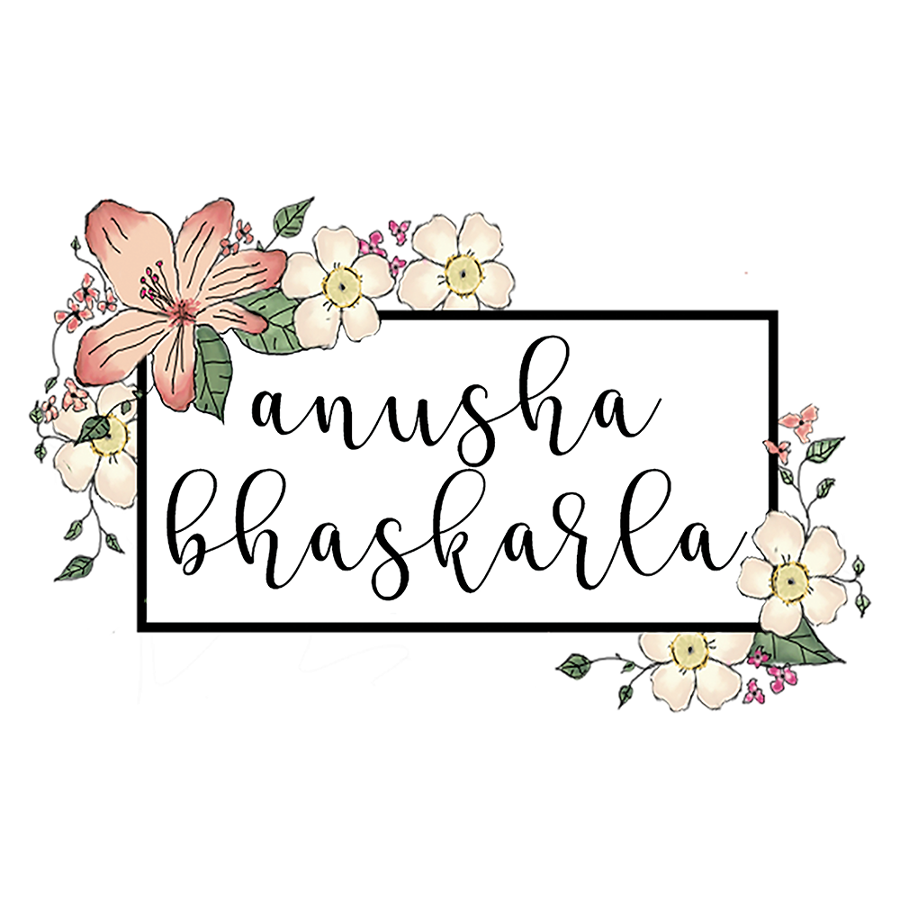

VECSTONE Thank You Card
This project was completed for a client looking for a clean and sleek thank you card that embodies their brand. Using the brand's logo, I incorporated the companies existing brand style so that the card would seamlessly integrate with their other materials when communicating with their clients. This modern and minamialistic thank you card enables VECSTONE to build brand value.
VISUAL DESIGN
Here are some other miscellaneous graphics and artwork that I have created!
Design Tools: Adobe Illustrator, Adobe Photoshop, Wacom Tablet



INDIAN STUDENT ASSOCIATION
As the Graphic Designer of the Indian Student Association of Indiana University, I was tasked with creating various marketing materials for the organizations events. These events were marketed towards a large audience, and drew up anywhere from 50 to 400 individuals. The design of all marketing was incredibly important, as the organization had been faced with falling attendance for events. Going into this position, I wanted to make some changes to the way that the Graphic Design position interacted with the rest of the organization. Instead of functioning in a silo, I made it a point to interact with other board members and prospective event attendees to get an understanding of what kind of design appeals to our audience. By using a thoroughly outlined design approach that I created, I was able create graphics that sparked interest while also contributing to the creation of the organization's brand. Below are some samples of work from my time in the position. Hover over the images to learn more about the design!
Design Tools: Adobe Illustrator, Adobe Photoshop, Wacom Tablet